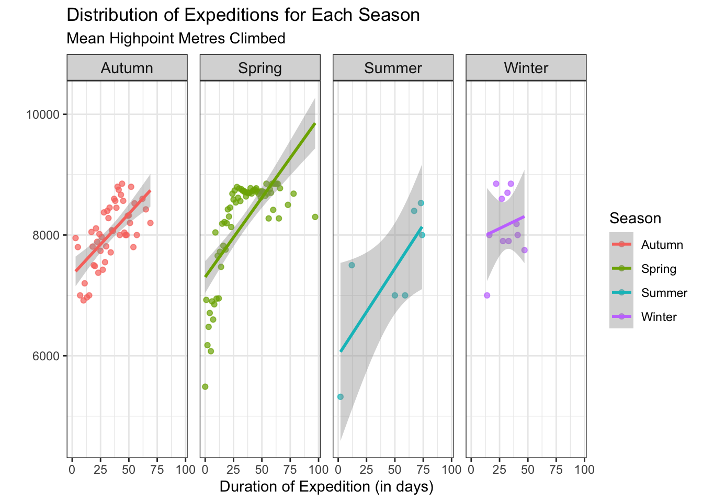

── Attaching core tidyverse packages ──────────────────────── tidyverse 2.0.0 ──
✔ dplyr 1.1.4 ✔ readr 2.1.5
✔ forcats 1.0.0 ✔ stringr 1.5.0
✔ ggplot2 3.5.1 ✔ tibble 3.2.1
✔ lubridate 1.9.3 ✔ tidyr 1.3.0
✔ purrr 1.0.2
── Conflicts ────────────────────────────────────────── tidyverse_conflicts() ──
✖ dplyr::filter() masks stats::filter()
✖ dplyr::lag() masks stats::lag()
ℹ Use the conflicted package (<http://conflicted.r-lib.org/>) to force all conflicts to become errors
library(ggplot2)everest <-read_csv("everest.csv")
Rows: 2136 Columns: 15
── Column specification ────────────────────────────────────────────────────────
Delimiter: ","
chr (8): expedition_id, peak_name, season, basecamp_date, highpoint_date, te...
dbl (6): year, highpoint_metres, members, member_deaths, hired_staff, hired_...
lgl (1): oxygen_used
ℹ Use `spec()` to retrieve the full column specification for this data.
ℹ Specify the column types or set `show_col_types = FALSE` to quiet this message.
Warning: Using `across()` in `filter()` was deprecated in dplyr 1.0.8.
ℹ Please use `if_any()` or `if_all()` instead.
Midterm Essay
This data set contains information on multiple expeditions of people climbing up Mount Everest. Before starting, I cleaned up the data set by removing expeditions with missing values. In this data set, each row represents a singular expedition and each column contains information about the expedition.
To answer the question, “How have Mt. Everest treks changed over time,” I decided to investigate the relationship between the duration of the expeditions and the average meters climbed, while also accounting for the seasonal variation.
In order to do this I created a new data set and isolated season, duration, and average meters climbed. I turned season into a factor variable, and converted the dates into date variables. I did this in order to create a duration variable, by subtracting the two date variables. I also created the mean_mtrs variable which is the average high point meters grouped by season.
`summarise()` has grouped output by 'season'. You can override using the
`.groups` argument.
Before computing the summary statistic table, my hypothesis was that the season with the longest duration of climbing and highest average meters climbed would be summer and the shortest would be winter. I made a summary statistics summary that includes the mean, standard deviation, median, and maximum mean meters.
To my surprise, summer had the least average meters climbed as well as the smallest maximum meters. Its standard deviation was the largest, meaning its average meters climbed varied tremendously. The seasons with the most average meters climbed were spring and autumn, with spring tying for the maximum average meters climbed. This makes sense because spring most likely has the best conditions to climb.
Lastly, I made a graph to represent my research question. I made a scatter plot with the duration of the expedition as my x-axis and the average meters climbed as my y axis. I also faceted and colored by season. I put the graphs for each season side by side, because proximity allows for easier comparisons among groups.
ggplot(everest_essay, aes(x = duration,y = mean_mtrs,color = season ) ) +geom_point(alpha =0.7) +geom_smooth(method = lm) +facet_grid(~ season) +theme_bw() +labs(x ="Duration of Expedition (in days)",y ="",subtitle ="Mean Highpoint Metres Climbed",title ="Distribution of Expeditions for Each Season",color ="Season",shape ="Season" ) +theme(strip.text.x =element_text(size =11),panel.spacing =unit(0.6, "lines") )
Don't know how to automatically pick scale for object of type <difftime>.
Defaulting to continuous.
`geom_smooth()` using formula = 'y ~ x'

This graph disproves my hypothesis and agrees with my summary statistic table. By looking at the graph, spring was the season with the longest duration as well as the highest average meters climbed. Additionally, although winter has the shortest duration out of all the seasons, its mean high point meters climbed are more than summer’s. Autumn seems to have the second-best conditions for climbing, after spring, because it has the second highest average meters climbed. There is more data associated with autumn and spring than the others. Overall, the graph gave me a lot of insight and addressed my research question suitably.